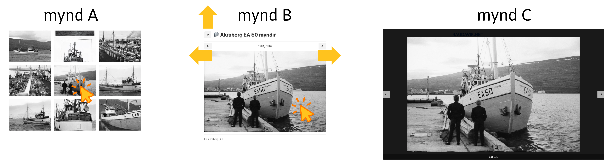

Hér á vefsíðuni Raudavik.net sjáið þið myndir og minningar um útgerð og síldarsöltun þeirra feðga Valtýs Þorsteinssonar og Hreiðars Valtýssonar.
Ef það er í fyrsta skipti sem þú heimsækir, er mælt með því að byrja á "Um" síðunni, gjörið svo vel.

💡 Vefsíðan er auðveld í notkun
Til dæmis, ef þú velur skip/söltunarstöð með bendlinum þá birtast allar myndir viðkomandi ‑ mynd A.
Þú getur svo valið ákveðna mynd með bendliunum ‑ mynd B.
Þú getur síðan stækkað myndina með bendlinum ‑ mynd C, eða minka hana aftur ‑ mynd B.
Síðan er hægt að fletta í gegnum myndirnar með örvunum á mynd B eða mynd C.
Til að fara aftur á mynd A er örin upp á mynd B.
Fasta myndnúmerið (hér akraborg_26) er staðsett neðst til vinstri á mynd B.
